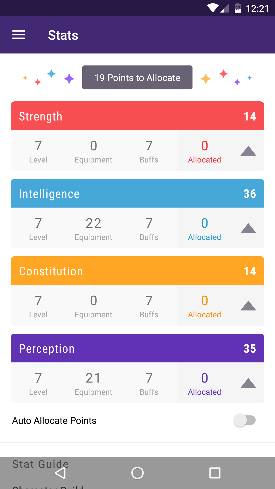

<section data-background-color="rgb(66,37,117)">
  <div class="container-fluid">
    <div class="row">
      <div class="col-6">
        <div class="row core-row center" style="flex-direction: row"
             [ngClass]="{'ov-borders': highlightCore, visible: highlightCore2, transparent: highlightFeature1}">
          <div class="col-6 center ov-borders" [ngClass]="{visible: highlightImage1}" style="padding: .5em 0 .5em 0">
            
            <div rvlFragment (show)="blurImage1 = false" [autoNext]="true" [nextDelay]="1"
                 (hide)="blurImage1 = true"></div>
            <div rvlFragment (show)="highlightImage1 = true" (hide)="highlightImage1 = false"></div>
            <p style="position:absolute;" class="fade-up" [autoBack]="true"
               (show)="blurImage1 = true; highlightImage1 = false;" (hide)="blurImage1 = false" rvlFragment>
              Auth</p>
          </div>
          <div class="col-6 center ov-borders" [ngClass]="{visible: highlightImage2}" style="padding: .5em 0 .5em 0">
            
            <div rvlFragment (show)="blurImage2 = false" [autoNext]="true" [nextDelay]="1"
                 (hide)="blurImage2 = true"></div>
            <div rvlFragment (show)="highlightImage2 = true" (hide)="highlightImage2 = false"></div>
            <p style="position:absolute;" class="fade-up" [autoBack]="true"
               (show)="blurImage2 = true; highlightImage2 = false;" (hide)="blurImage2 = false" rvlFragment>
              User data</p>
          </div>
          <h4 *ngIf="highlightCore" style="position: absolute; top: -1.2em;">Core</h4>
        </div>
      </div>
      <div class="col-3 core-row center"
           [ngClass]="{'ov-borders': highlightFeature1, visible: highlightFeatureBorder1, transparent: highlightFeature2}">
        <div class=" ov-borders" [ngClass]="{visible: highlightImage3}" style="padding: .5em 0 .5em 0">
          
        </div>
        <div rvlFragment (show)="blurImage3 = false" [autoNext]="true" [nextDelay]="1" (hide)="blurImage3 = true"></div>
        <div rvlFragment (show)="highlightImage3 = true" (hide)="highlightImage3 = false"></div>
        <div style="position:absolute;" class="fade-up" [autoBack]="true"
             (show)="blurImage3 = true; highlightImage3 = false" (hide)="blurImage3 = false" rvlFragment>
          <p>Habits</p>
          <p>Dailys</p>
          <p>Todos</p>
        </div>
        <h4 *ngIf="highlightFeature1" style="position: absolute; top: -1.2em; font-size: .8em">feature</h4>
      </div>
      <div class="col-3 core-row center"
           [ngClass]="{'ov-borders': highlightFeature2, visible: highlightFeatureBorder2}">
        <div class=" ov-borders" [ngClass]="{visible: highlightImage4}" style="padding: .5em 0 .5em 0">
          
        </div>
        <div rvlFragment (show)="blurImage4 = false" [autoNext]="true" [nextDelay]="1" (hide)="blurImage4 = true"></div>
        <div rvlFragment (show)="highlightImage4 = true" (hide)="highlightImage4 = false"></div>

        <h1 style="position:absolute;" class="fade-up" [autoBack]="true" (show)="blurImage4 = true; highlightImage4 = false"
            (hide)="blurImage4 = false" rvlFragment>
          ...
        </h1>
        <h4 *ngIf="highlightFeature2" style="position: absolute; top: -1.2em; font-size: .8em">...features</h4>
      </div>
      <div rvlFragment [autoNext]="true" [nextDelay]="1" (show)="highlightCore = true"
           (hide)="highlightCore = false"></div>
      <div rvlFragment [autoBack]="true" (show)="highlightCore2 = true" (hide)="highlightCore2 = false"></div>
      <div rvlFragment [autoNext]="true" [nextDelay]="1" (show)="highlightFeature1 = true"
           (hide)="highlightFeature1 = false"></div>
      <div rvlFragment [autoBack]="true" (show)="highlightFeatureBorder1 = true"
           (hide)="highlightFeatureBorder1 = false"></div>
      <div rvlFragment [autoNext]="true" [nextDelay]="1" (show)="highlightFeature2 = true"
           (hide)="highlightFeature2 = false"></div>
      <div rvlFragment [autoBack]="true" (show)="highlightFeatureBorder2 = true"
           (hide)="highlightFeatureBorder2 = false"></div>
    </div>
  </div>
</section>
